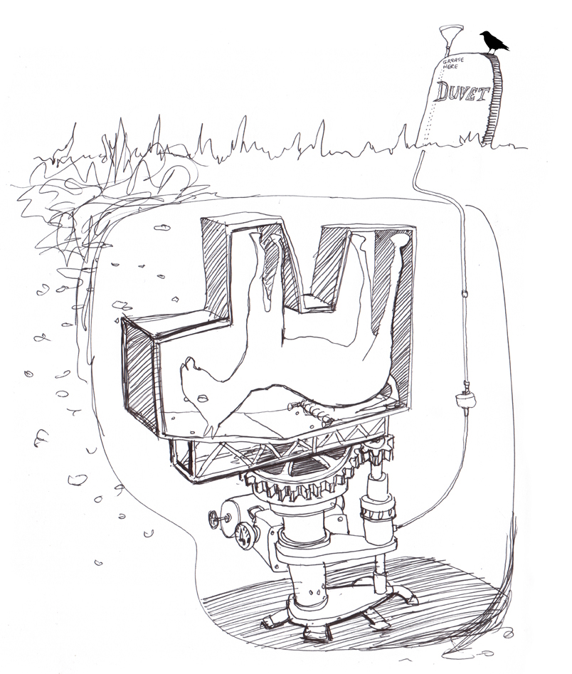

Thursday, July the 24th, 2014
back to: title, date or indexes
Further to yesterday's piece The Rotating Grave, I am indebted to David Cranmer for sending in this drawing of poor exhausted Duvet's rotating horse-grave.
